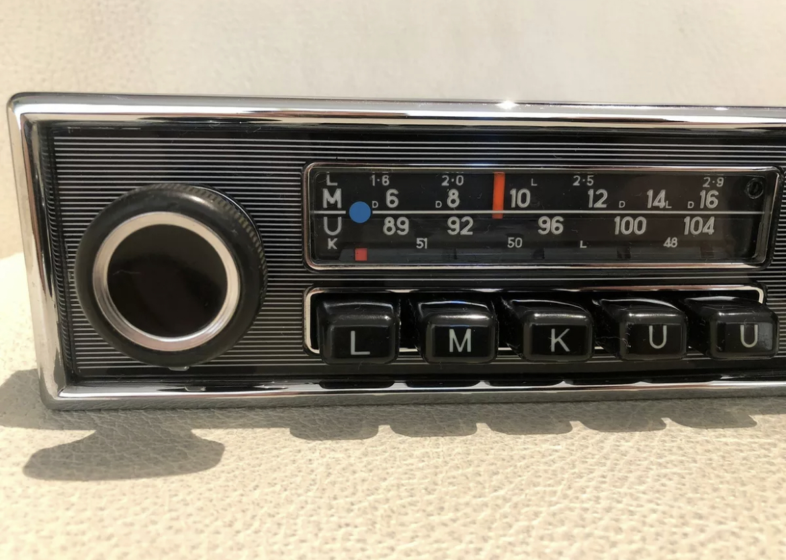
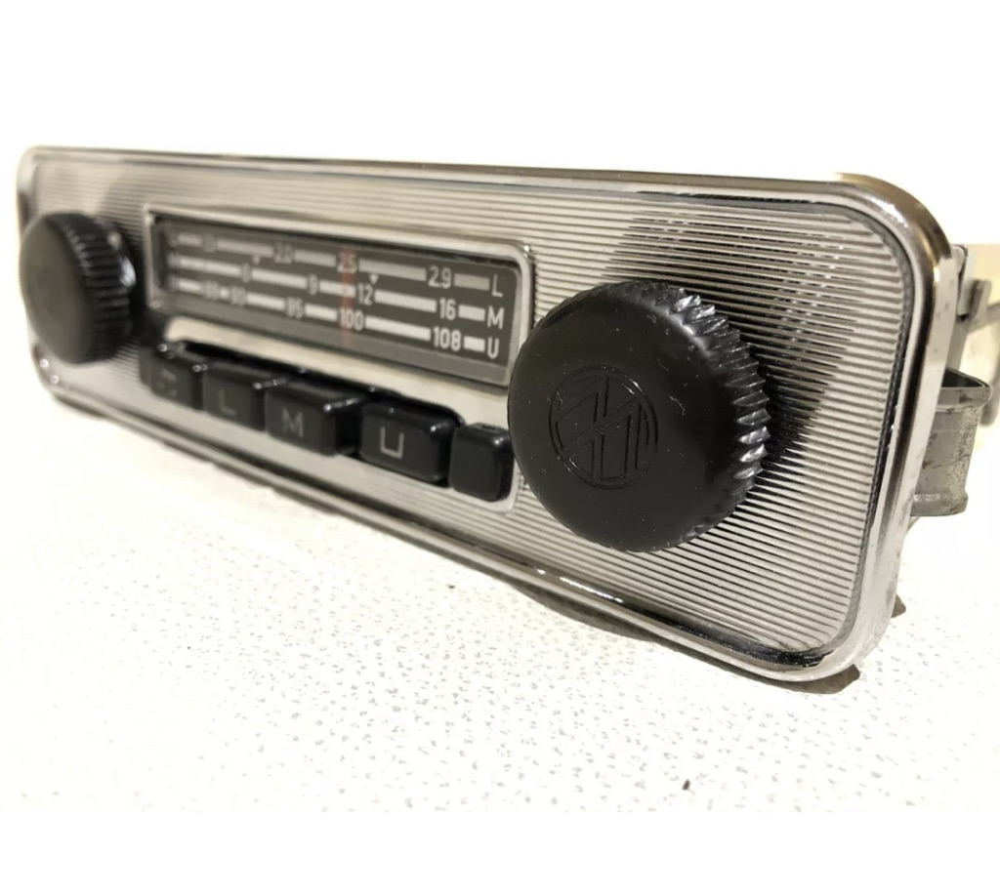
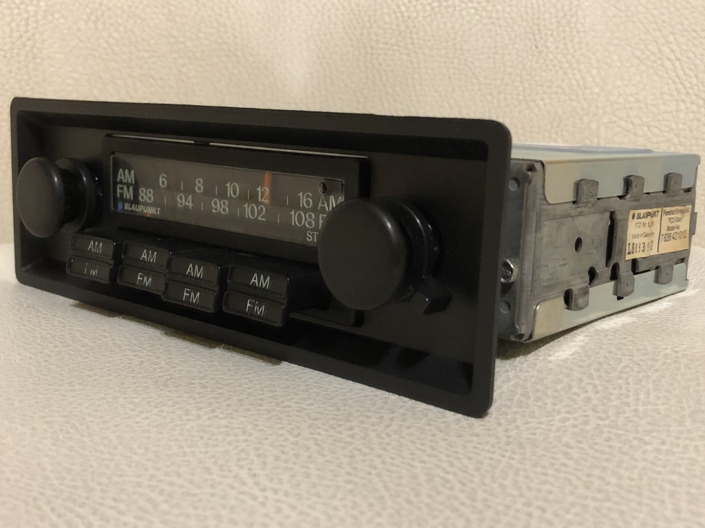

Restaurierte Original-Autoradios, Blenden, Knöpfe und Bedienungsanleitungen — sortiert nach Fahrzeugmarke. Bilder im Shop sind Archivbilder und können leicht von der Originalware abweichen.
Hinweis: Die genaue Stückzahl je Kategorie und der Bestellvorgang laufen aktuell über den bestehenden WooCommerce-Shop — hier ist Platz für die jeweilige Produktliste, sobald sie in dieses Layout übernommen wird.



Werden mehrere Produkte gekauft, richten sich die Versandkosten einmalig nach der teuersten Ware und dem jeweiligen Land. Weitere Länder auf Anfrage.
| Zielgebiet | Kosten | Lieferzeit |
|---|---|---|
| Deutschland | 7 € | ca. 4 Tage |
| EU | 19 € | ca. 4 Tage |
| Schweiz (UPS) | 39 € | ca. 6 Tage |
| USA / Kanada | 59 € | ca. 2–5 Tage |
| Australien | 59 € | ca. 7 Tage |
| Japan / Taiwan | 59 € | ca. 7 Tage |
Über PayPal:
Weitere Möglichkeiten: